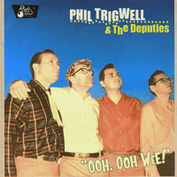

Phil Trigwell and the Deputies - Ooh, Ooh Wee! (Album, 2009)
01 - I Ain't Got Time (2:06)
02 - I Got It! (1:41)
03 - Gold Digger (2:08)
04 - Just One Look (1:49)
05 - Again And Again (1:48)
06 - Romeo And Juliette (1:53)
07 - Cullpeppar Joane (2:33)
08 - Baby (2:15)
09 - Baby Look At Me (1:44)
10 - Poor Little Kid (2:01)
11 - Miss Ginnie Lee (2:07)
12 - Ooh, Oh Wee! (2:16)
13 - Why Did You Find Somebody New? (2:23)
14 - Eddie (1:56)
© Rhythm Bomb Records :: [RBR 5674]
Notes
reference information: Discogs®
Review
024/366 (Project 366)
Lovely! Real classy Rock-A-Billy with a lot of rockin' and rollin' diamonds around. Phill Trigwell is a well-known top-notch musician. And the band itself too. Tracks are inspired by many classic themes, artists and ways to perform it. But still with own look. Fancy lyrics, clever texts, sparklin' vocals. All is good. Catchy switching from chanting and singing to dialog and back then. Smooth authentic sound. Sometimes raw, sometimes wild, sometimes just rocking and rolling! Well, one more release to review it carefully. Ooh.. ooh... wee!